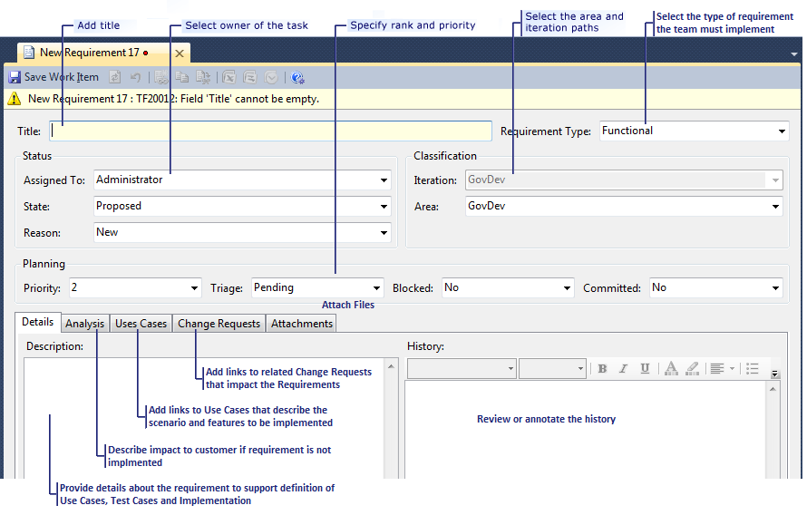

The desired outcome of planning a project is a plan that includes a scope, a schedule, a budget, a risk management plan, and a commitment and approval from all stakeholders. With an agreed-upon project plan, you want to progress with analysis, design, development, testing, and eventually delivery.
You can reduce risk by using an iterative development method. Iterations let you demonstrate a partly working product at the end of each iteration and act on feedback from that demonstration. Therefore, the plan provides an overall shape and is subject to review and refinement before the start of each iteration.
In this topic
 Gathering
and Modeling the Requirements
Gathering
and Modeling the Requirements
This activity is about discussing what the system should do, with business stakeholders, prospective users, and subject matter experts. It is important to understand the business context. If you have been asked to write an application for police officers, it helps to understand their jargon, procedures, and rules.
UML models are a useful tool for expressing and thinking about complex relationships. You can draw them in Visual Studio and link them to other documents and to Team Foundation work items. For more information see Modeling User Requirements.
Update and refine the requirements model throughout the project. As each iteration approaches, add more detail to the aspects of the model that are relevant to that iteration. From the model, you can derive verification tests.
For more information, see Developing Requirements and Use Cases and Developing Tests from a Model.
Creating
Incremental Requirements
The requirements as you have gathered them from your customers are not directly appropriate for the purpose of scheduling incremental development. For example, to clarify the procedure when a user buys something from a Web site, you might have written a detailed series of steps: customer browses catalog, adds item to cart, checks out cart, supplies address, and pays; warehouse schedules delivery; and so on. These steps are not incremental requirements but rather multiple use cases that roll up to the the overall requirement. Requirements define an overall set of functionality that is broken up into use cases that are allocated across iterations to deliver incremental functionality and to minimize the risk due to to incomplete, misunderstood or changing requirements. This is one of the key porints of the GovDev for TFS 2010 porocess templates.
If you work with an existing product, the principle is the same, but you start from the existing functionality. If you are unfamiliar with its internal design, the cost of updates can be difficult to estimate. It is worth being liberal with your estimates for the earlier changes.
For more information, see Arranging Requirements into a Project Plan.
Entering
and Editing Requirements
Record the product requirements as requirement work items in Team Foundation, and set the requirements type to Functional (default) (or Feature, Non-Functional, Performance, etc. as appropriate). You can create requirement work items in Team Explorer. If you have several work items that you want to create at the same time, you can use the Office Excel view of the Product Requirements query. For more information, see Working in Microsoft Excel and Microsoft Project Connected to Team Foundation Server and Performing Top-Down Planning Using a Tree List of Work Items (In Excel). You can define the requirement in a work item by specifying a variety of information, as the following illustrations show:

Prioritizing
Requirements
Representatives of the business stakeholders and the development team should work together to prioritize requirements so that the subsequent use case decompositon can be assigned to iterations. Typically, you do this in a meeting, where you share or project the Office Excel view of the Open Requirements query.
Some guidelines on prioritization
Many detailed schemes exist for prioritization. We will examine some of these when we consider iteration planning. For now, at the project level, we include some guidelines that may be useful to help manage risk and optimize added value.
-
Prioritize minimal end-to-end scenarios.
Aim to achieve a simple end-to-end scenario as early in the project as possible. Later, add more features to the different parts of the scenario. This practice ensures that the principal functions of the platform and the principal ideas in the requirements are tried early.
By contrast, do not divide the schedule according to the architecture. A schedule that completes the database, then the business logic, and then the user interface will probably require a great deal of rework to integrate the parts at the end. In the same manner, a horizontal split such as {sales component; warehouse component; payment component} is not recommended. It would probably produce a wonderful system for selling on the Web but run out of time before the business has a means of getting money from its customers. Complete components can be scheduled for later iterations only if they are truly optional add-ons.
-
Prioritize technical risk.
If a requirement includes a technically risky element, develop it early in the schedule. Take a “fail early” approach to risk. If something cannot be accomplished, you want to know this early in the project so that it can be canceled or replaced with an alternative approach. So prioritize technically risky requirements into early iterations.
-
Prioritize reduction of uncertainty.
The business stakeholders will not be sure about some requirements. It is difficult to predict what product behavior will work best in the business context. Prioritize work that is likely to reduce the uncertainties. This can often be achieved by developing a simpler version of the scenario with which users can experiment. Defer the full scenario to a later iteration, in which the results of these experiments can be considered.
-
Prioritize highly valuable requirements.
If possible, try to establish an opportunity-cost-of-delay function for each scenario. Use these to determine the requirements that can potentially bring more value to the customers earlier. Prioritize these requirements for development of use cases that are to be put into earlier iterations. This may buy you the option of releasing a partial product early.
-
Group requirements that are common to multiple personas.
If you have requirements that have utility for two or more personas, group these together. Rank them by the number of personas that require the scenario. Prioritize the requirements that apply to a larger number of personas into early iterations.
-
Rank personas.
Personas represent market segments or user groups. Marketing people or business owners should be able to articulate the priority of such segments or groups based on utility to be delivered or the value of the segment. If segments or user groups can be ranked in priority, show this by listing the personas for each segment by rank. Identify the requirements for the highest ranked personas, and prioritize these into earlier iterations in the schedule.
In general, we want to prioritize the reduction of risk because of the possibility of failure. We want to prioritize common functionality because it is likely to be required and unlikely to change. We want to prioritize more valuable requirements. We want to enable the option for early release of the product to a subset of personas by prioritizing all requirements that are required to satisfy the needs of any one persona.
Revising
Requirements
Revisit this activity before each iteration to consider revised and new requirements, revised priorities, and revised estimates. There will be more revisions in the first few iterations.